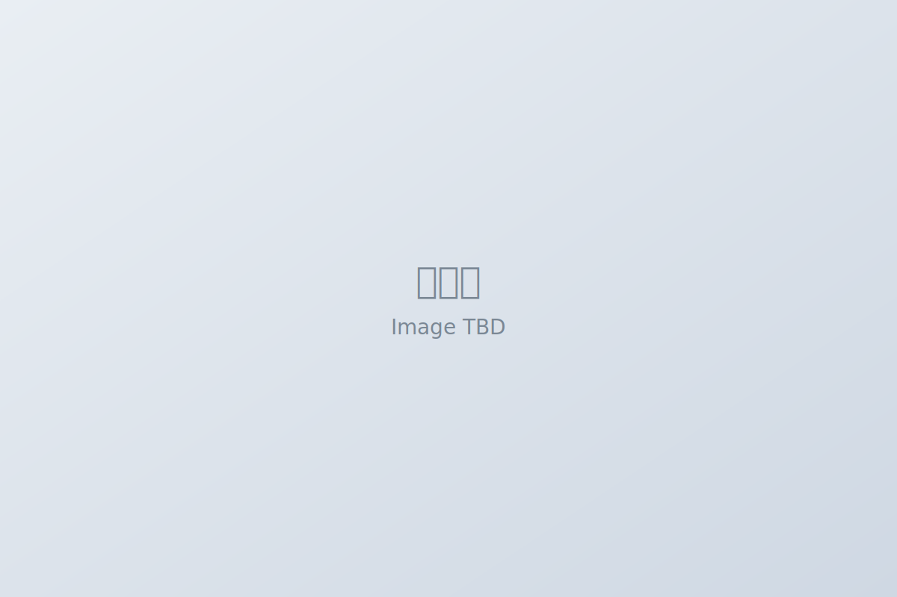

一段话总结
AI职场搭子DouDou聚焦Z世代职场人核心痛点（71%职业健康评分“不健康”、84%存在精神压力、76%依赖AI解决职场问题），以“陪伴+成长赋能”为核心，通过动态交互释压装置（即时情绪缓解）、启发式提问系统（问题拆解与认知引导）、角色反转复盘（客观视角+知识沉淀）、职场地图可视化（目标拆解与路径规划）四大核心功能，结合Vue3+Uni App、MongoDB、大模型微调等技术栈构建产品，基于PMF逻辑完成MVP验证；其市场规模测算显示保守情况下可获市场（SOM）约4.38亿元，并通过“内环数据沉淀+外环商业营收”双循环模式（C端订阅/内容共创、B端招聘/企业培训）实现商业化，最终从用户、企业、社会三层提供价值，助力职场人完成从情绪疏解到个人优势构建的跃迁。

一、项目背景与市场洞察
- 核心人群：Z世代职场人（18–29岁）；普遍“学生→职场”思维转化难。
- 痛点数据：71%职业健康不佳、84%有精神压力、76%使用AI、94%用于职场问题。
- 痛点层次：短期情绪崩溃 | 中期思维转变 | 长期优势定位。
- 趋势：线上心理/AI陪伴同比增长85%，付费意愿增强。
二、产品核心功能
- 动态交互释压：点击火苗即时情绪缓解。
- 启发式提问系统：5题框架+分支逻辑，生成成长报告。
- 角色反转复盘：老板/同事视角，沉淀动态复盘卡。
- 职场地图可视化：目标拆解与路径规划，降低行动门槛。
三、技术方案
- 前端：Vue3 + Uni App；后端：Node.js + MongoDB。
- AI：大模型微调 + RAG检索 + Agent智能体 + MCP工具。
- 部署：Sea LOS（容器化）、火山引擎（算力）。
- 架构：数据/AI/应用/前端四层清晰解耦。
四、商业模式与运营
- 双循环：内环数据沉淀→模型优化；外环C端订阅/共创 + B端招聘/培训。
- 获客：抖音内容合作、社群运营、机构资源互换。
- 用户分层：预备军→种子→活跃/付费→忠诚。
五、MVP验证与市场规模
- 验证：需求高频（80%新人日遇至少1题）、澄清率70%、释压反馈65%、发布率30%。
- 规模：SOM=4.38亿元（保守假设），数据来源权威且对标合理。
六、应用价值
- 用户层：情绪出口 + 能力内化 + 职业规划。
- 企业层：降低培训成本与流动率，沉淀团队经验。
- 社会层：提升心理健康与人才结构竞争力。
演示图总览
以下为当前所有演示截图的原图展示（自适应缩放、无裁剪）。
人生地图
3×3 六边形阶段地图，清晰呈现成长路径与当前所处位置。
成长地图（网格）
简洁网格强化“下一步行动”，聚焦关键阶段与目标。
好友与共享技能库
资料卡、MBTI、共享学习资源，一起协作成长。
知识库
沉淀与分享资料，构建可复用的长期记忆系统。
任务系统
每日/每周任务，一目了然的完成状态与反馈闭环。
成长报告
基于行为与问卷生成个性化报告，洞察趋势与亮点。
AI 创作与聊天
结合上下文与知识库，快速生成创作或对话建议。